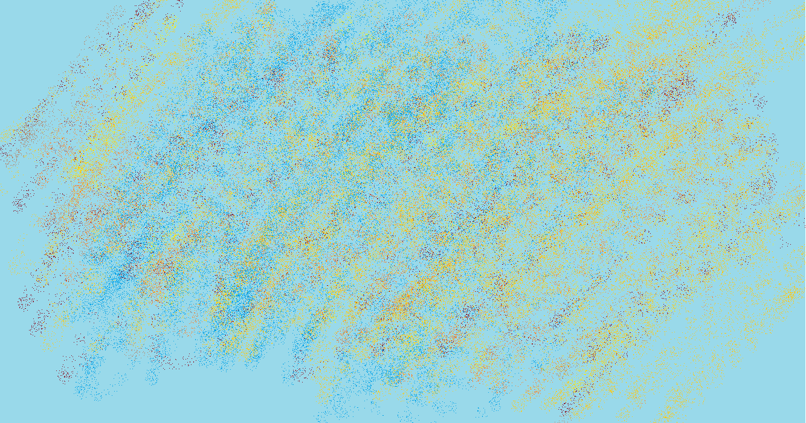

朋友曾经送给我一个评价：「你总是在生产很多文字」。
诚如所言。
「生产」是一个通用字眼，作用于物质，回归于生活。它似乎与诞生文字所需要进行的思考毫无关系，但是我很喜欢这个评价。我似乎总是对任何事物都心生想法，并期待着它的回应。
前几日整理过去的笔记，仿佛同时在观瞻曾经的自己。在这轮回记忆和告别的无奈里，察觉到我其实早已和过去断了联系。怎么与自己和解果真还是人世间最大的困难，而当我开始整理自己曾经「生产」的文字的时候，却发现自己其实并没有留下什么。
日益碎片的生活演化的记忆使我迷失，把思考集中下来仿佛成为了一件遥远的事情。串联起无限个瞬间，实在很难自我感知到是否缺少了什么。我用了无数个失眠的夜晚总结失去的时光，但事实是，这些夜晚通常归于沉寂和彷徨而并未留下什么，即使我是因为一事无成而焦虑难免。
留不下，记不住，没意义。
而我的「生产」通常得不到什么回声。
强烈的情绪时常使我惶恐。
确实，描述日常实在是太难了，尤其是需要反观自身的时候。无效的内耗徒增磨损，日复一日间也不知多少次被人重创、遭人欺骗、给人误解，同时也经历了许多捉摸不透的体验。毕竟，我的思考总是领先于我的笔尖，唯一能紧跟思路的或许只剩下了言语。只是未经整理的文本你的力量总是是我彷徨，毕竟没有经历时光和深刻思考的话语缺乏决定性的力量。
但是，如果不写下来的话，那就什么意义也没有了。
我仍旧相信传达的意义，交流比一切的一切都更有力量。这里可能什么都有，但这里总结着我对世间万物或深刻或戏谑的思考。原始思考的角度发端是自觉，而我希望保留这份有趣的视角带给我的悸动。这里是我立足这条「追求深刻而不是追求清晰」的旅程中，回望自己的场域。
Babble，含混不清、胡言乱语，又是流水的潺潺声；
又像是 Bubble，轻盈的泡泡承载着轻盈的心愿，我想借着这份眺望看到更远。
僕らが描いた未来は，遥か遠い道の途中。
我们所描绘的未来，就在那遥远的路途中。
欢迎来到我的「Babble」，或者说我的博客！（笑）
这里是我的一次尝试，是我总结自己碎片记忆和情绪表达的场域。毫无疑问，这里必然会「东拉西扯」～可能有我的认真吐槽，抑或是我的深刻思考，或许还会有一些神奇的文本涌现……总之什么都有可能产生。
我曾无数次考虑这里是否过于「生活」。但是没有人生的积淀，难以被称之为生活，所以我决定老实地吐露自己的心声。我从不奢望这份表达能够创造什么深刻的价值，产生什么深刻的影响，但是「记录」是我能做到的第一步。
希望当我回顾的这里的时候，我能笑着对自己说：
「诚然，即使他没能到达，也是在伟大的挑战中失败的。」
当自然要索回我的灵魂或者理性要舍弃它是，我将离开这个世界，证明我热爱过良知和善好的追求，也没有妨害过任何人的自由，更不用说自己的自由了。—— 一位打算、希望、尝试去做这些事的人，将接近诸神；诚然，即使他没能到达，
也是在伟大的挑战中失败的。 —— 塞涅卡《论幸福生活》20:5